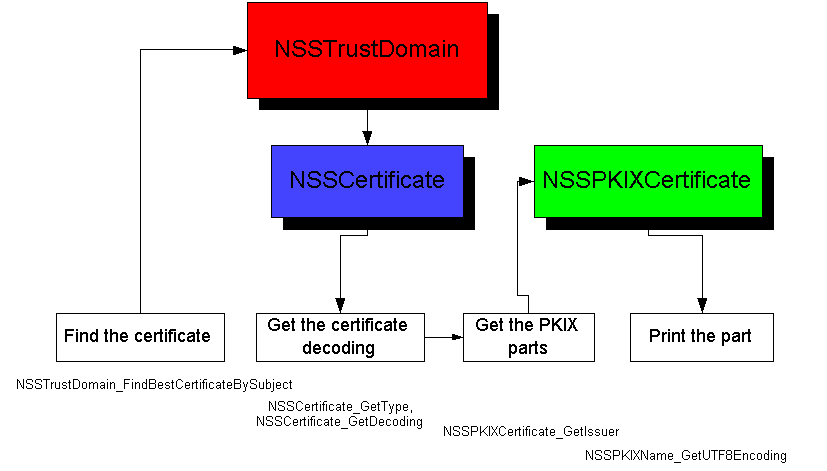

'default',
);
require_once "{$config['file_root']}/includes/header.inc.php"
?>
Relationship between libpkix and libpki

In Stan as it exists now, there are three layers of code dealing with certificates.
The lowest layer, libdev, is concerned with talking to Cryptoki devices,
and implements things like NSSToken. In this library, a certificate
is nothing more than a lightweight wrapper around a cryptoki object (nssCryptokiObject,
of course).
The next layer up is libpki. This layer implements NSSCert
and NSSTrustDomain (among others), and is concerned with the management of
certificates. This includes importing, deleting, validating, and searching
for certificates, as well as using them for crypto operations.
The final layer is libpkix. This layer implements the entire PKIX
specification from RFC 2459, including NSSPKIXCert. This includes
building a certificate from subparts, and decoding a full DER.
Stan has been designed to be independent of any particular certificate specification.
Currently, we only support X.509 certificates, but is is conceivable that
we could choose to support another existing certificate type (PGP), or need
to support an unspecified certificate type in the future. PKCS#11
currently supports only X.509, but it is also designed to be extensible.
Stan maintains this independence in libpki. All of the API functions
for managing certs there are blind to a particular certificate type.
In the OO sense, NSSCert is supposed to be a base class, and NSSPKIXCert
derives from it. NSSCert represents the common functionality
for all certificates we choose to support.
It is worth noting that libpki/NSSCert only needs to peek into a
few parts of a certificate. Specifically, libpki needs access to the
following information:
- Specific issuer identifiers (issuerKeyID, e.g.) used to differentiate
issuing certificates with the same subject but different key material
- The validity period
- The set of certificate usages
- Cert policies
- Cracking a BER/DER blob to obtain the following fields needed by PKCS#11:
- DER subject
- DER issuer
- DER serial number
- email address
- A higher-level verification mechanism. X.509 certs have a bunch
of rules for verification, involving extensions like basic constraints, etc.
In NSS 3.X, the code for cracking/constructing certificates is included
in the same library (libnss3.so) as the code for managing them, as well as
in the same type (CERTCert). Stan affords the opportunity to
separate these layers. libpkix is entirely independent of libpki, so
we have the choice of bundling them into one libnss4.so, or keeping them
separate, including only libpki in libnss4.so, and shipping a separate libpkix.so.
I think there are certain advantages in doing this. The certificate
implementations would be "pluggable". We could define a set of callbacks
for the six accessors defined above. Then, any .so which implements
those six methods can register itself at initialization time as the default
handler for that certificate type. For example, we could have an API
function:
NSS_RegisterCertHandler(NSSCertType, NSSCertMethods
*);
and libpkix would implement NSSCertMethods for PKIX
certificates, by having a function:
NSSCertMethods * NSSPKIX_GetMethodsTable();
This would avoid tying us down to any particular certificate model, while
at the same time (IMO) keep the code fairly clean. We wouldn't have
to fill our cert code with a bunch of if-then-else's and switch statements.
It also means there would be no circular dependencies between libpki and
libpkix.
It would, however, mean that would would have to be very careful with backwards
compatibility in case NSSCertMethods were to change.
This exists to some degree already, in the form of nssDecodedCert.
Here is how I would propose to define the methods table:
struct NSSCertMethodsStr
{
/*
* Decoding a certificate of this type. This method is
used when
* NSS is asked to import an encoded certificate.
*/
void * (* decode)(NSSArena *arenaOpt, NSSBER *encoding);
/* Obtain the following encoded parts from the decoded cert.
*/
NSSBER * (* getSubject)(void
*cert,
NSSBER *rvOpt,
NSSArena *arenaOpt);
NSSBER * (*
getIssuer)(void *cert,
NSSBER *rvOpt,
NSSArena *arenaOpt);
NSSBER * (* getSerialNumber)(void *cert,
NSSBER *rvOpt,
NSSArena *arenaOpt);
NSSASCII7 * (* getEmailAddress)(void *cert, NSSArena *arenaOpt);
/*
* Obtaining a generic identifier for the certificate's issuer.
These
* methods are required to correctly build certificate chains.
*/
/* If this certificate issuer's has a specific identifer, get it
*/
void * (* getIssuerIdentifier)(void *cert);
/* Does this identifier match the certificate? */
PRBool (* isMyIdentifier)(void *cert, void *id);
/* Free an identifier */
void (* freeIdentifier)(void *id);
/*
* Obtaining the certificate's validity period. This method
is
* required to compare two certs by valid time.
*/
/* Get the validity period of the cert */
PRStatus (* getValidityPeriod)(void *cert,
NSSTime *notBefore,
NSSTime *notAfter);
/*
* Obtaining certificate usages.
*/
/* Get the array of usages this certificate is capable of */
NSSUsage * (* getUsages)(void *cert, PRUint32 *numUsages);
/*
* Obtaining certificate policies.
*/
/* Get the policies specified by this cert */
NSSPolicies * (getPolicies)(void *cert);
/*
* Validating a certificate chain.
*/
/* Start a certificate chain validation */
void * (startValidation)(NSSTime *time,
NSSUsage *usage,
NSSPolicies *policies);
/* Validate this cert in the chain */
PRStatus (* validate)(void *cert, void *issuer, void *vData);
/* Free chain validation data */
void (* freeValidationData)(void *vData);
/*
* future extensions
*/
void *reserved;
};
For PKIX certificates, functions implementing the methods table would cast
cert arguments to NSSPKIXCert. Downcasting is always
ugly, and would have to be something like:
void *
NSSCert_GetDecoding(NSSCert *);
used as:
if (cert->type == NSSCertType_PKIX) {
NSSPKIXCert *pkixCert;
pkixCert = (NSSPKIXCert *)NSSCert_GetDecoding(cert);
...
}
Note that NSSPKIXCert is "free-floating". AnNSSPKIXCert
is just the decoded parts of a DER. It is not ref-counted. It
does not necessarily exist as a physical object. That is, there is
no functional difference between an NSSPKIXCertthat came
from a token, and one that was built from a bunch of DER data. The
NSSPKIXCert obtained above is owned by theNSSCert
it came from, and does not need to be freed. It is within the scope
of the parent NSSCert.
If you construct an NSSPKIXCert from parts, and want
it to become part of the system (that is, usable as an NSSCert),
you would have to import it into either a trust domain or crypto context.
For example:
NSSPKIXCert *pkixCert;
pkixCert = NSSPKIXCert_Create(arena, tbsCert, signature);
if (pkixCert) {
NSSDER *certDER;
certDER = NSSPKIXCert_Encode(pkixCert);
if (certDER) {
NSSCert *nssCert;
nssCert = NSSTrustDomain_ImportEncodedCert(trustDomain,
certDER);
if (nssCert) {
...
}
}
}